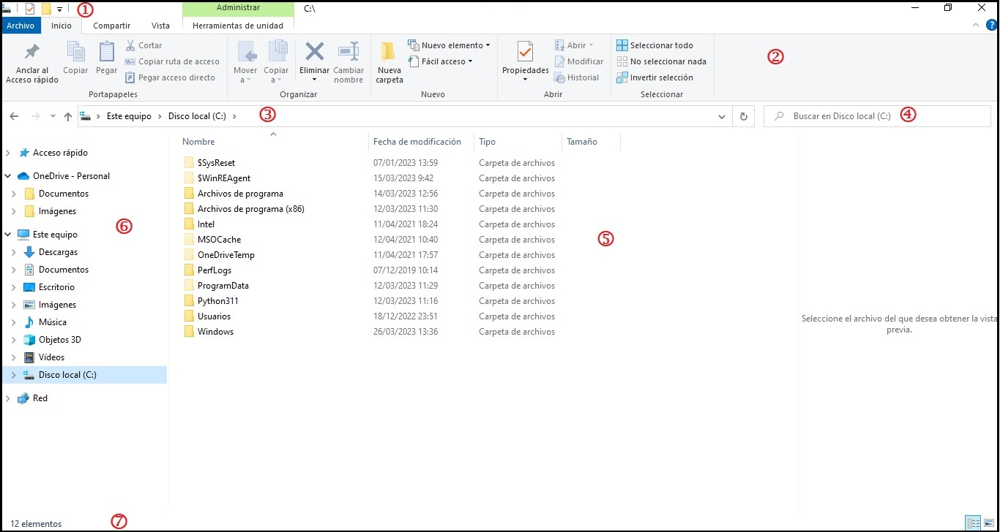
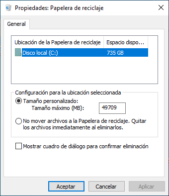
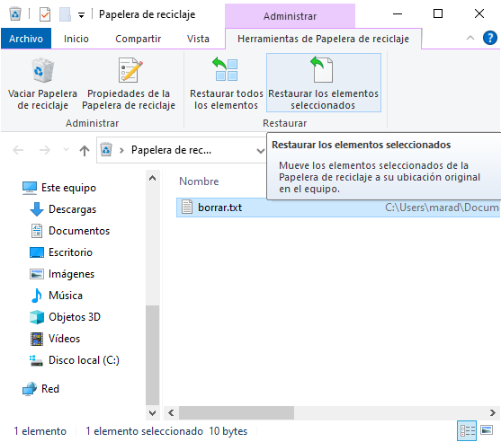

El Explorador de archivos
Hay varias formas de abrir el Explorador de archivos en Windows, algunas de ellas son:
- Seleccionar el icono en la barra de tareas

- Presionar la tecla de Windows + E en el teclado
- Inicio > Documentos.
Veamos ahora qué elementos encontramos en la ventana del Explorador de archivos:

Barra de herramientas de acceso rápido 
El botón con forma de triángulo que apunta hacia abajo es el que nos permite configurar la barra. Al pulsarlo, se despliega el menú con el que podemos añadir y/o eliminar botones.
Barra de opciones
Contiene todos las acciones que podemos realizar sobre las carpetas, archivos, unidades y otros elementos de nuestro ordenador. Estas están organizadas en pestañas cuyo contenido varía dependiendo del elemento que tengamos seleccionado en la ventana de archivos. Por ejemplo, si tenemos una imagen seleccionada, aparecerá un pestaña llamada Herramientas de imagen. La barra de opciones se puede ocultar pulsando en la pequeña flecha que hay en la esquina superior derecha  .
.
Botones de navegación 
Se utilizan para ir hacia atrás (a la carpeta de la que venimos), hacia adelante (si previamente hemos utilizado el botón atrás) y a la carpeta contenedora, la de nivel superior. Al pulsar el botón de la pequeña "v" se nos muestra un listado de las carpetas que hemos ido visitando, así podemos ir más rápidamente a alguna de esas ubicaciones.
se nos muestra un listado de las carpetas que hemos ido visitando, así podemos ir más rápidamente a alguna de esas ubicaciones.
Barra de direcciones
Esta barra nos indica en qué carpeta estamos situados, así como el esquema jerárquico de carpetas que la contienen. Si pulsamos sobre alguna carpeta de la ruta mostrada, iremos directamente a ella.
La pequeña flecha de la derecha nos muestra una lista de las rutas visitadas recientemente. También es posible escribir directamente una dirección web, al pulsar Enter o  se abrirá dicha web en el navegador Edge.
se abrirá dicha web en el navegador Edge.

Cuadro de búsqueda
Sirve para buscar algún elemento dentro de la carpeta en la que estamos situados y en todas sus subcarpetas.
Ventana de archivos
Aquí aparecen los archivos y carpetas contenidos en la carpeta en la que estamos situados, salvo si acabamos de hacer una búsqueda, entonces solo aparecerán los archivos que cumplan las condiciones de la búsqueda.
La forma en que veamos los elementos en esta ventana dependerá de qué opciones hayamos elegido en la pestaña Vista de la barra de opciones.
- Seleccionar un solo elemento: hacer clic en él.
- Seleccionar varios elementos consecutivos: hacer clic en el primero y luego manteniendo pulsada la tecla MAYUSC hacer clic en el último. También se pueden seleccionar haciendo clic en una zona vacía de la ventana y arrastrando en diagonal hasta englobar los elementos dentro de un cuadro coloreado.
- Seleccionar varios elementos no consecutivos: hacer clic en el primero y luego manteniendo pulsada la tecla CTRL hacer clic en cada uno de los siguientes.
- Seleccionar todos los elementos: pulsar CTRL+E o en la pestaña Inicio de la barra de opciones Seleccionar todo.
Panel de navegación
Aquí vemos el árbol de carpetas y unidades. Podemos distinguir qué carpetas contienen a otras y expandir o contraer los niveles. Un elemento muy útil, dentro de este panel, es el Acceso rápido, donde se muestran las carpetas más visitadas. El panel de navegación se puede ocultar desde la pestaña Vista de la barra de opciones.
Barra de estado
Se encuentra en la parte de abajo de la ventana. Nos muestra información sobre la carpeta y sobre el archivo seleccionado (si lo hay). A la derecha hay un par de botones que sirven para cambiar rápidamente la visualización de los archivos.
Operaciones con archivos y carpetas
Dentro de la barra de opciones, la ficha Inicio nos permite copiar, pegar, mover, renombrar, seleccionar y ver o modificar propiedades de archivos o carpetas. También nos permite abrir archivos con los programas adecuados ( ):
):

Crear un acceso directo a un archivo o carpeta
Hay varias formas de hacerlo. Por ejemplo, haciendo clic en el elemento con el botón derecho y , manteniéndolo pulsado, arrastrarlo a la ubicación donde queramos crear el acceso directo. Al soltar, nos aparecerá un pequeño menú contextual con la opción Crear acceso directo aquí.
Otra forma es, haciendo clic con el botón derecho dentro de la ubicación donde queramos crear el acceso directo (por ejemplo en el escritorio)y seleccionar Nuevo-Acceso directo. Luego se trata de elegir el archivo o carpeta en cuestión.
También tenemos la opción de crear un acceso directo en el Escritorio, haciendo clic con el botón derecho del ratón sobre el elemento, luego Enviar a -> Escritorio (crear acceso directo).

Cuando instalamos un programa, es usual que, en algún momento del proceso de instalación, nos pregunte si queremos crear un icono de acceso directo en el escritorio para acceder a él más fácilmente.
Eliminar un archivo o carpeta
Seleccionamos el archivo o carpeta y pulsamos la tecla Supr. O bien, hacemos clic con el botón derecho sobre el elemento y seleccionamos Eliminar. Hay que tener en cuenta que, si queremos borrar varios elementos a la vez, no es necesario hacerlo uno por uno, basta con seleccionarlos todos y luego proceder igual que para uno solo.
Por regla general, los archivos o carpetas eliminados del disco duro (no desde un pendrive) "se almacenan" en la Papelera de reciclaje, a no ser que posean un tamaño excesivo, en cuyo caso el sistema nos lo indicará y nos preguntará si queremos hacer un borrado definitivo. Bueno, en realidad, los archivos eliminados no se trasladan físicamente a la papelera, lo que se modifica es un índice que señala dónde están los datos.
Para que al borrar un archivo no vaya a la Papelera de reciclaje solo tenemos que pulsar la tecla MAYÚSC (o Shift) junto con Supr o Eliminar.
También es posible configurar la Papelera de reciclaje para que todos los elementos que se eliminen no vayan a ella, sino que se borren definitivamente. Tan solo hay que hacer clic con el botón derecho sobre el icono de la Papelera y luego en la opción Propiedades. En el cuadro de propiedades marcaríamos la opción correspondiente. En dicho cuadro también podemos seleccionar el tamaño y la ubicación de la papelera.

Recuperar un archivo o carpeta de la papelera
Hacemos doble clic sobre el icono de la papelera de reciclaje que se encuentra en el Escritorio. A continuación, seleccionamos los elementos que deseamos recuperar y luego pulsamos en el botón de la parte superior Restaurar los elementos seleccionados.

Lo que hace Windows cuando eliminamos archivos, carpetas o programas del disco duro, es marcar ese espacio físico de la unidad de almacenamiento como disponible, pero realmente no los borra. Estos bloques de datos permanecen intactos y se pueden recuperar a menos que otro archivo los sobrescriba.
Más adelante, cuando guardemos nueva información, puede que se sobrescriba encima, pero tampoco es seguro, porque la escritura de datos tampoco se hace en sectores ordenados de alguna forma lógica.
Por tanto, hacer un formateo rápido o borrar archivos no garantiza haber eliminado definitivamente la información. Existen herramientas que escanean el disco duro, sector a sector, pudiendo recuperar toda esa información que esté en sectores en los que aún no se ha escrito nada nuevo. A veces se recupera toda la información, otras veces solo de forma parcial.
Renombrar archivos o carpetas
Haciendo clic con el botón derecho sobre el elemento, nos aparece un menú contextual con la opción Cambiar nombre. Otra forma de hacerlo es seleccionando el elemento y pulsando la tecla F2, o bien, utilizando el botón de la barra de opciones habilitado para ello. Una vez escrito el nuevo nombre, pulsamos la tecla Enter o en cualquier zona que no sea el propio archivo o carpeta.
Si renombramos un archivo debemos mantener la extensión. En caso contrario, es posible que al intentar abrirlo no funcione.
Copiar archivos o carpetas
1. Seleccionar el elemento.
2. Pulsar el botón Copiar de la ficha Inicio de la Barra de opciones. Otra forma es pulsando el botón derecho del ratón sobre el elemento que queremos copiar, se desplegará el menú contextual y elegimos la opción Copiar. También podemos hacerlo con las teclas rápidas Ctrl + C.
3. Pegarlo. Buscamos la carpeta donde queramos ubicar la copia que hemos realizado (o creamos una carpeta nueva). La abrimos y pulsamos el botón Pegar de la barra de opciones, o hacemos Ctrl+V o clic con el botón derecho del ratón sobre la ventana y en el menú contextual elegimos la opción Pegar.
Mover archivos o carpetas
Hay que realizar dos acciones: cortar y pegar. Los pasos a seguir son idénticos a los que hemos empleado para copiar, pero con la opción Cortar. Las teclas rápidas para cortar son Ctrl + X.
|
Hay que tener en cuenta que:
|
Extensión o tipo de un archivo
Los nombres de archivo de Windows tienen dos partes separadas por un punto: primero, el nombre del archivo, y segundo, una extensión de tres o cuatro caracteres que define el tipo de archivo. En imagen.jpg, por ejemplo, la primera parte del nombre de archivo es imagen y la extensión es jpg.
Podemos activar o no que se muestren las extensiones de los archivos en la pestaña Vista de la Barra de opciones: